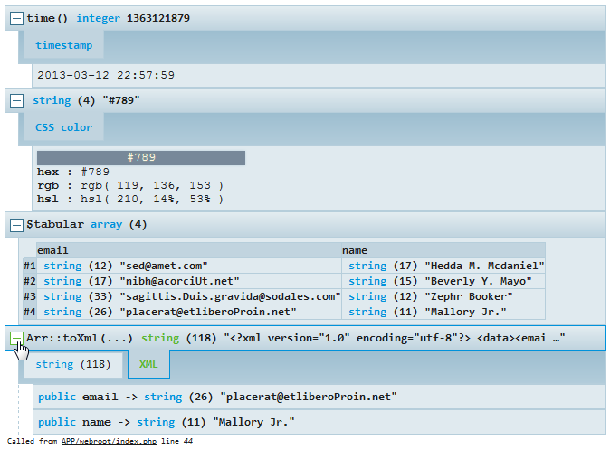
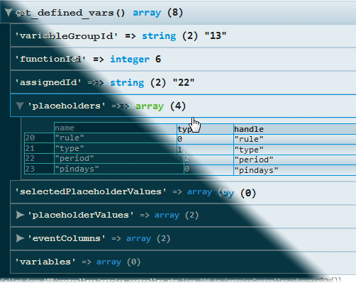

Kint - a modern and powerful PHP debugging helper
What is it?
Kint for PHP is a tool designed to present your debugging data in the absolutely best way possible.
In other words, it's var_dump() and debug_backtrace() on steroids. Easy to use, but
powerful and customizable. An essential addition to your development toolbox.
Still lost? You use it to see what's inside variables.

What's so great about it?
Or: why would you want to replace your trusty echo'<pre>';var_dump($var);die;?
-
Virtually no installation and no dependencies.
<?php require '/kint/Kint.class.php'; Kint::dump( $_SERVER );
-
Dump functions accept any number of parameters and have shorthands.
d( $variable1, $variable2 );
- Or you can simply use Composer to handle installation and keeping up to date.
Kint intelligently detects what kind of data is being dumped and can provide tailored alternatives to otherwise hardly readable data.
Just a subset of available content aware features:
You are presented with:
- The name of the variable/expression you passed.
-
The file and line where you called the dump function.
- Easily configurable to jump directly to your IDE on click.
- The function/method containing the call.
You are presented with a collapsible trace leading up to your call, you get to see the actual code of each step, the full dump of arguments that were passed, and - if available - the object which contained the method that was called.

See configuration section for details on changing themes and much more.
Installation and usage
Requirements
PHP 5+ (extra functionality with 5.3+); modern era browser; optionally mb_string
support for better character detection.
Quick start
Simply place the kint directory anywhere comfy and include the Kint.class.php file from there.
<?php
require '/kint/Kint.class.php';
Kint::dump( $_SERVER );
// or, even easier, use a shorthand:
d( $_SERVER );
// or, to seize execution after dumping use dd();
dd( $_SERVER ); // same as d( $_SERVER ); die;
// to see trace:
Kint::trace();
// or pass 1 to a dumper function
Kint::dump( 1 );
// to disable all output
Kint::enabled(false);
// further calls, this one included, will not yield any output
d('Get off my lawn!'); // no effect
Configuration
You can optionally copy the included config.default.php and rename to
config.php to override default values, but that's, again, entirely optional and you're
fine without this step.
Each option is heavily documented in the configuration file.
Advanced usage
Text-only output
To output variable info in a lightweight, HTML-free fashion use
<?php s( $variable ); // and sd( $variable ); // to exit immediately afterwards
The output is whitespace-formatted and uses no HTML/CSS/JS. It still HTML-escapes variables though.
Real-time modifiers
Kint also uses a non-standard PHP feature: modifiers. This is not a language feature; Kint achieves that by analyzing code that was used to call the dump functions (long story :).
<?php +Kint::dump( $variable ); // or, as usual +d( $variable );
Available modifiers:
+Kint::dump();will bypass the nesting depth limit.-
When outputting very complex objects, you may receive
*DEPTH TOO GREAT*messages, use this modifier to ignore them for that one call. - Be warned, it may cause your browser to hang in extreme cases.
-
When outputting very complex objects, you may receive
-Kint::dump();will clean all previous output to screen before displaying the dump.- Use it to show the dump at the very top of the page.
- Extremely useful when dumping variables inside HTML; powerful combined with
dd(); - Be warned, it may cause your browser to hang in extreme cases.
-
May fail to work in rare cases when
ob_clean()andob_start()are used beforehand.
@Kint::dump();will return the output of the Kint::dump() instead of displaying it on screen.- Useful for logging to file.
!Kint::dump();will display the dump expanded by default so you don't have to click :)
Using Kint with a framework
Kint is usually effortless to install (see Laravel 4 example), but contributors have provided integration plugins for some platforms. In no particular order:
If you have integrated Kint into a framework or CMS, I'd be really grateful if you notified me via my email below or in the comments section, I'd add a link here too.
Disclaimer: I do not manage any of these repositories.
Notes
This tool is used heavily in real life development and constantly improved. Issues and feature requests are very welcome.
You should probably avoid using this tool in non-development environment settings, I cannot be held responsible for the performance, security and/or stability issues Kint may cause.
Credits
Original design by Mindaugas Stankaitis.
See contributors on Github.
Shoutouts
Check out an awesome universal source decoder by a friend of mine.
Author
Rokas Šleinius a.k.a. Raveren

License
Kint is licensed under the MIT License.
Leave a comment
comments powered by Disqus